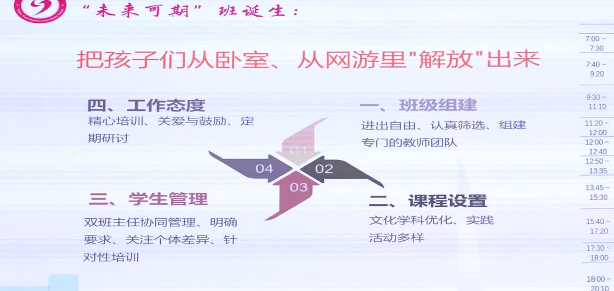

A01B/C · 实践稿＋视频
减脂窗口
学校为BMI偏高的学生设低油低糖专窗，配置体脂秤、营养讲座、挑战卡和选餐记录。媒体对19号窗口有现场报道。
能够支持
减脂餐服务真实发生，并具备一定持续性。
证据边界 窗口使用量、每日摄入量和个体依从性尚未汇总。
SECTION 02 / ACTIVITY AND CURRICULUM
课程表、活动场景、制度和学生经历共同构成过程证据。照片说明“发生过”，台账才说明“持续发生”。
COURSE EVIDENCE
本页优先展示能够说明“谁在什么时间、以什么载体、面向哪些学生实施”的材料。没有课表、授课记录或参与记录的活动，只能作为线索。
| 课程域 | 已呈现的实施载体 | 目前证据强度 | 仍需补充 |
|---|---|---|---|
| 健康身体 | 每天一节体育课；“3+2”结构；月月有比赛；课桌操、正脊操、眼球操；视力与脊柱筛查；减脂餐和营养点餐。 | B/C：实践稿、期刊、视频、公开报道 | 班级课表、赛事名单、课堂观察、健康档案年度汇总。 |
| 健康心理 | 润心广播、心理晴雨表、每周微课、全员导师、ABC分级关爱、“未来可期”课程。 | B/C：实践稿、期刊、视频 | 课程表、导师记录、筛查流程、匿名个案追踪。 |
| 健康社会适应 | 师友成长共同体、暖言善行、班级共建、满天星志愿服务、小委员提案。 | B：实践稿、期刊 | 学生服务时长、活动方案、学生作品和教师观察。 |
FIELD NOTES
公开页只使用匿名化或不含正脸的活动图像；带个人信息的照片与视频原件在评审材料包内。

视觉材料只能说明活动场景，不能证明参与人数、活动频率或学生持续变化。
学校为BMI偏高的学生设低油低糖专窗，配置体脂秤、营养讲座、挑战卡和选餐记录。媒体对19号窗口有现场报道。
减脂餐服务真实发生，并具备一定持续性。
实践稿提出每天一节体育课、3+2结构、月月有比赛；外部报道可见单杠园和运动活动。
学校有稳定运动时段和全员比赛安排。
面向全体、重点支持、个别干预三级结构已写出；含心理晴雨表、全员导师、ABC分级和未来可期课程。
学校已形成制度化的心理支持框架。
友好相处—我爱集体—志愿服务逐层展开，志愿服务设为必修并规定每学期8次、10小时。
社会适应已被纳入课程要求。